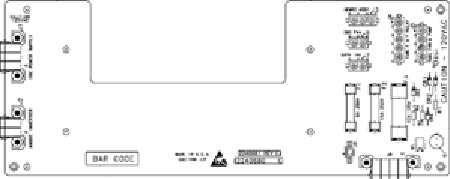

Operating Documentation
Direction 5114045-800, Rev# 10
LightSpeed 4.X Service Information (Advanced)
Operating Documentation |
This board provides power distribution for the OBC and HV subsystem, and includes several fuses (refer to Illustration 1 and Table 1). The board also contains a circuit that monitors the Tube Fan and Pumps, and reports any sensed failures, including open fuse detection. See the schematics for circuit details.
Illustration 1: OBC Power Interface Board Fuse Locations

Table 1: OBC Power Interface Fuses
| FUSE #1 | VALUE | DESCRIPTION |
|---|---|---|
| F1 | 8A, 250v | Cathode, Anode Inverter, OBC Fan and OBC power supply. |
| F2 | 15A, 250v | HEMRC Assembly. |
| F3 | 12A, 125v | Tube Fan and Pumps. |